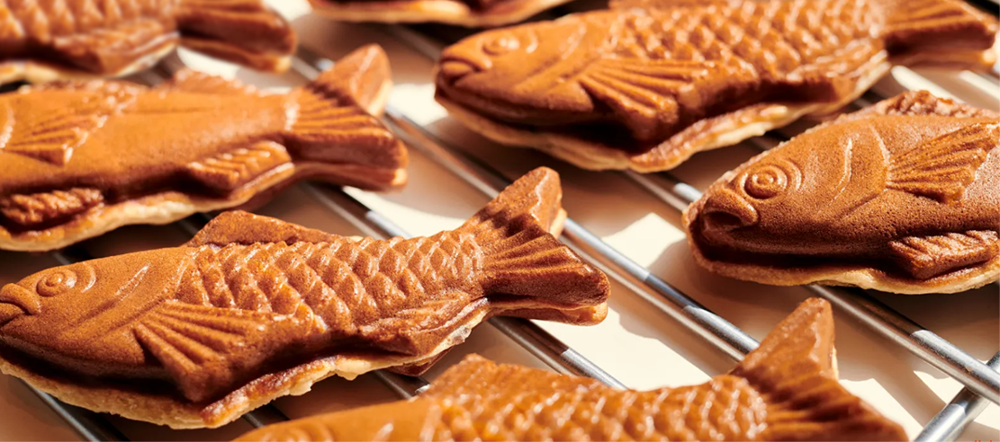

私たちはこの美しくカラフルな世界に住んでいます。私たちはのんきな生活を送っていますが、何も不足しておらず、必要なものはすべて揃っています。
私たちはこの美しくカラフルな世界に住んでいます。私たちはのんきな生活を送っていますが、何も不足しておらず、必要なものはすべて揃っています。

イワシ、アジ、アサリ３匹のおいしいカタチ
“個性を尊重する”
そんなメッセージを込めた、
普段は地味で目立たない、
愛くるしい３匹の鯛焼きです。